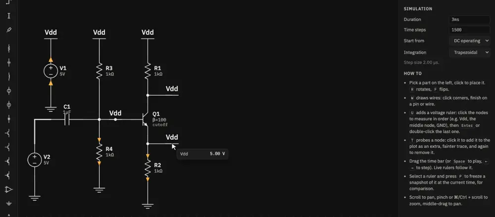
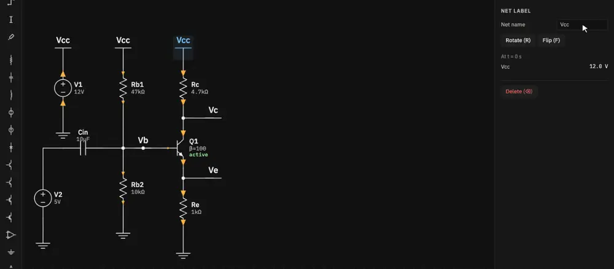
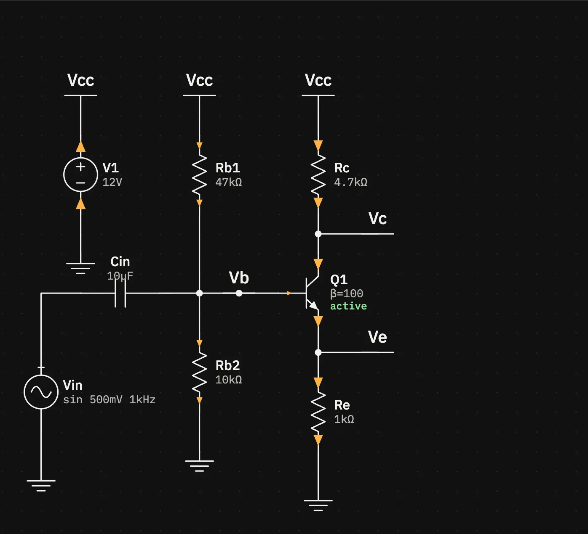
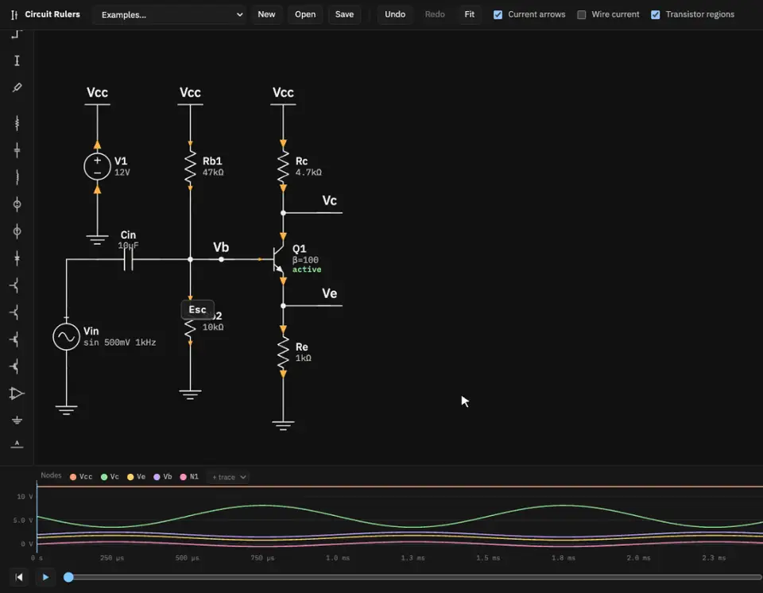
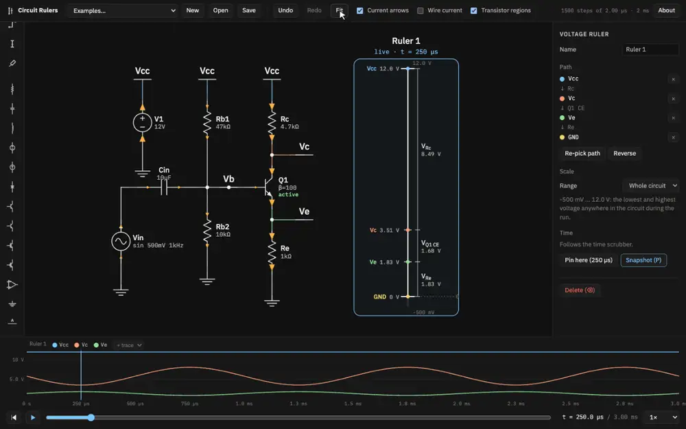
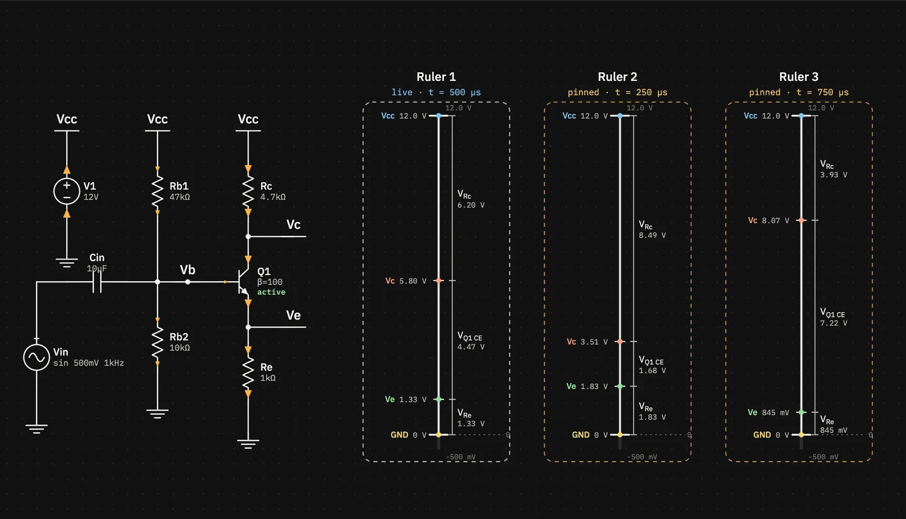
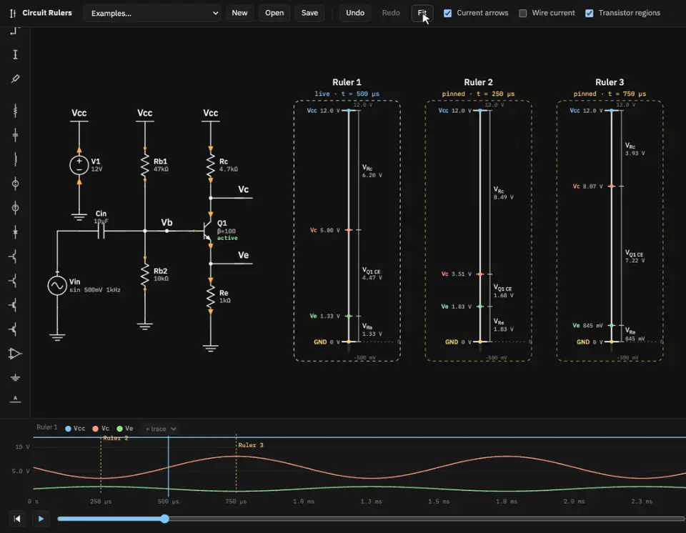
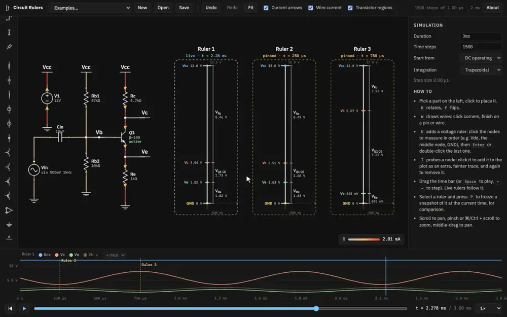
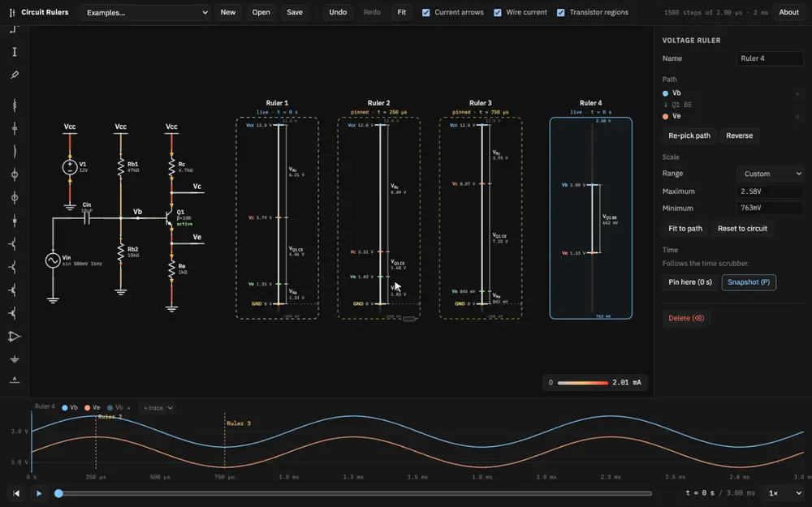
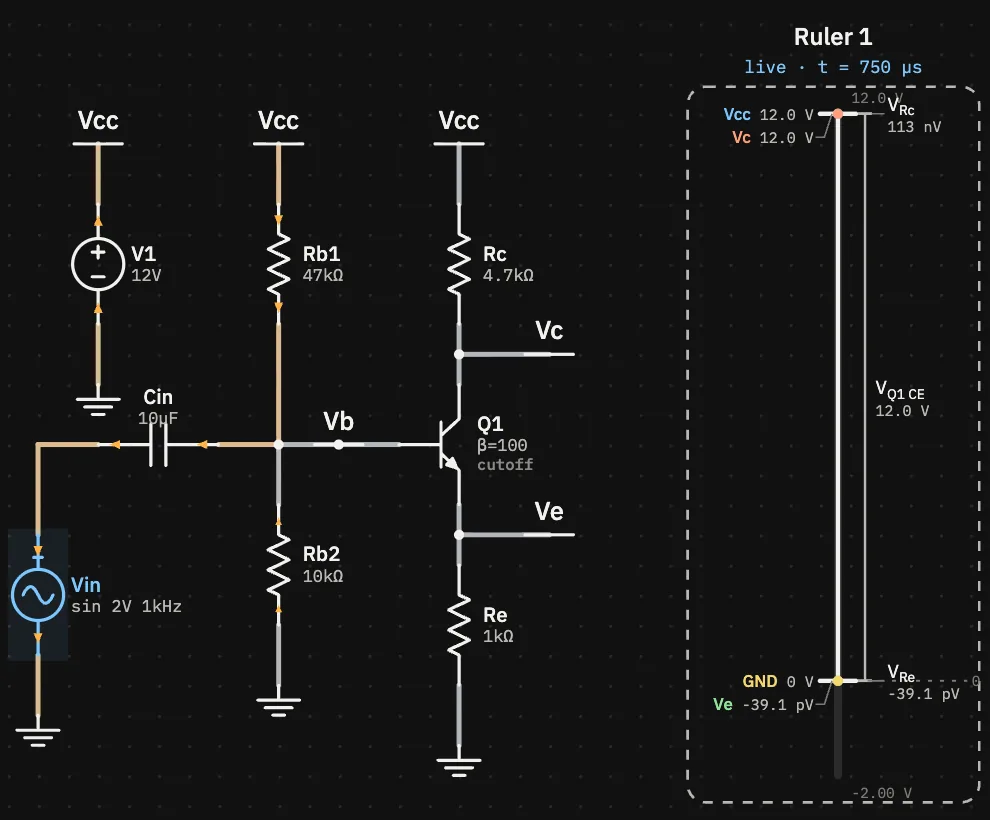

Tutorial 2
A transistor amplifier
Build a common-emitter amplifier around an NPN transistor, then use the app to see why it amplifies, how big the gain is, and what happens when you drive it too hard.
This builds on tutorial 1. If you'd rather skip the drawing, load Common-emitter amplifier from the Examples menu. It's the same circuit with its rulers already placed, and you can pick this tutorial up at step 2.
1Build the circuit
Click New, then place and wire these parts:
| Part | Value | Where it goes |
|---|---|---|
| V1 | DC 12 V | The supply: + to a Vcc label, − to ground |
| Rc | 4.7 kΩ | From Vcc down to the collector (label that node Vc) |
| Q1 (NPN) | β = 100 | Collector up, emitter down, base to the left |
| Re | 1 kΩ | From the emitter (label it Ve) down to ground |
| Rb1, Rb2 | 47 kΩ, 10 kΩ | A divider from Vcc to ground, its middle wired to the base (label it Vb) |
| Cin | 10 µF | Horizontal (press R before placing), from the input source to Vb |
| Vin | Sine, 500 mV, 1 kHz | The signal: + to Cin, − to ground |
The three Vcc labels don't need wires between them: net labels with the same name are
the same node, wherever they are on the sheet.
Set names and values
Select each part and fill in its name and value in the inspector. Values take engineering notation:
4.7k, 47k, 10u (or 10µ), 500m. Prefixes are
case-sensitive: m is milli and M (or meg) is mega.

For the input source, set Waveform to Sine, Amplitude to
0.5 and Frequency to 1k.

Finally, click an empty spot on the canvas to show the simulation settings. Set Duration to
3m, which is three cycles, and Time steps to 1500, a 2 µs step.

2Check the operating region
The small label under β shows the transistor's operating region at the current time. Green means amplifying, which for a BJT is forward active. Hover Q1 for a tooltip with its voltages and currents.

Select Q1 and the inspector shows the same readout, plus the rule that decided the region:

The divider sets Vb ≈ 12 V × 10k / 57k ≈ 2.1 V, a little less once the base draws current. The emitter sits one VBE lower, at about 1.3 V, so IE ≈ 1.3 V / 1 kΩ ≈ 1.3 mA. Almost all of that flows through Rc, dropping about 6.2 V, so Vc ≈ 5.8 V: roughly mid-supply, leaving room to swing both ways.
3A ruler down the collector stack
Press U and click four nodes from top to bottom: Vcc (the top of Rc), Vc, Ve and GND. Press Enter, click Fit in the top bar to bring everything into view, and press Space to play.

The ruler labels each step with the part it crosses. Between Vc and Ve that's the transistor's collector–emitter pair, so the bracket reads VQ1 CE. Watch the 12 V get shared out over a cycle: when Vin rises, more current flows, VRc grows and VCE shrinks. The emitter moves only a little, because Re is small next to Rc.
4Snapshot the extremes and measure the gain
The input peaks at 250 µs and bottoms out at 750 µs. Press Home, step to 250 µs (⇧→ 12 times, then → 5 times), select the ruler and press P. Then step to 750 µs, select the live ruler again and press P.


Vc goes from 3.51 V to 8.07 V, a 4.56 V swing, while the input swings 1 V peak to peak. The gain is about −4.6: inverted, since Vc is lowest when Vin is highest. The textbook estimate is −Rc / Re = −4.7. Ve only moves from 1.83 V to 0.85 V: the emitter follows the base, which is why the gain is set by the resistor ratio.
5Probe a node and colour the wires by current
The plot shows the selected ruler's nodes. To add another node without putting it on a ruler, press T for the probe tool and click it. Here that's the Vb wire. It's drawn as a fainter extra trace, and the × next to its name in the legend removes it. The + trace menu in the legend does the same thing as the probe tool.
Then tick Wire current in the top bar. Each wire is coloured by the current through it, from silver for almost none to red for the largest current in the run. The legend in the corner gives the scale.

6Zoom a ruler onto VBE
On the shared scale, VBE is a sliver. Make a two-node ruler from Vb to Ve. In the inspector, set Range to Custom and click Fit to path. The scale now covers just the range those two nodes move through during the run, plus a little margin. You can also type a Maximum and Minimum yourself.

The base swings by a full volt, but VBE stays between about 0.65 and 0.67 V. The exponential junction needs only a small change in VBE to change the current a lot. That's why “VBE ≈ 0.7 V” works so well as a rule of thumb.
7Drive it too hard
Select Vin and raise its Amplitude to 2. Press Home, then
Space, and watch Q1's region label and the rulers.



Your snapshots changed too. A pinned ruler is pinned to a time, so when the circuit changes it shows the new run at that moment. The plot shows the clipping as a flat top at 12 V and a flat bottom near 3.3 V, where the saturated transistor makes Vc follow Ve.
Try next
- Set the amplitude to
10mand add a 100 µF capacitor across Re. It shorts Re for the signal but not for the bias, so the gain jumps to about Rc / re ≈ 250, and even 10 mV starts to distort. The Common emitter, bypassed Re example is this circuit. - Reverse a ruler (Reverse in the inspector) and its step voltages change sign, since they're signed in path order.
- Load Emitter follower or Current mirror from the Examples menu. Every example comes with its rulers placed.
- Read Voltage rulers and Currents and regions for everything these tools can do.